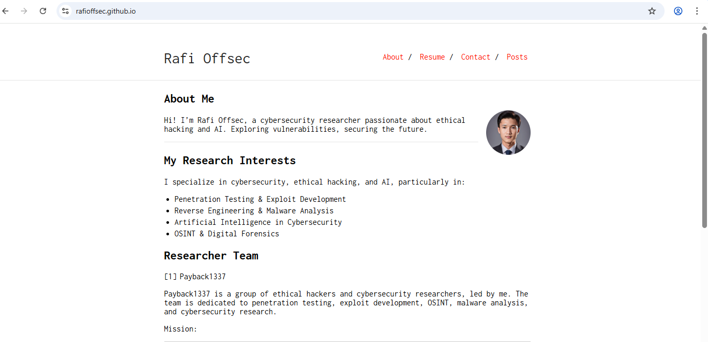
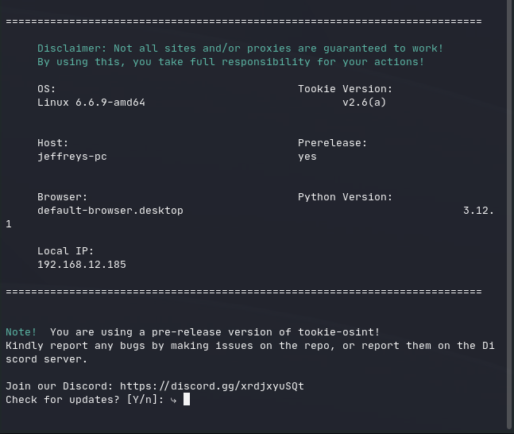

Saya adalah mahasiswa Teknik Informatika yang memiliki ketertarikan besar di bidang keamanan siber, ethical hacking, dan pengembangan web. Saya senang mengeksplorasi berbagai tools yang berkaitan dengan penetration testing dan automation, serta selalu tertarik untuk mencoba hal-hal baru di dunia teknologi. Meneliti, bereksperimen, dan terus belajar adalah bagian dari keseharian saya.
Di luar kegiatan belajar di platform seperti TryHackMe, saya senang mengembangkan berbagai proyek pribadi. Mulai dari membuat bot Telegram, membangun sistem monitoring, hingga mengelola blog pribadi dengan teknologi web statis. Rasa ingin tahu yang besar terhadap teknologi mendorong saya untuk terus bereksperimen dan mengasah kemampuan secara mandiri.
Informasi Kontak
- Email: im.mrafiakbar@gmail.com
- GitHub: m.rafiakbar
- Website: mrafiakbar.github.io
Pendidikan
| Tahun | Institusi | Program Studi |
|---|---|---|
| 2025 - Sekarang | Universitas Siber Asia | Teknik Informatika |
| 2021 - 2023 | SMK Syafi'i Akrom | Teknik Komputer dan Jaringan |
Pengalaman
| 2023 | Web Developer Freelance | Membangun dan mengelola website UMKM, termasuk fitur e-commerce dan halaman portofolio. |
| 2024 | Cybersecurity Intern | Melakukan penetration testing internal, analisis kerentanan, serta audit keamanan pada aplikasi web. |
| 2024 | Proyek Pribadi | Mengembangkan bot Telegram, sistem monitoring sederhana, dan blog pribadi sebagai media eksplorasi teknologi. |
Keahlian
- HTML, CSS, JavaScript (Dasar)
- Python (Otomatisasi, Flask, Bot Telegram)
- Linux (CLI, Shell Scripting) & Tools Jaringan
- Keamanan Siber (CTF, Web & Network Pentesting)
- Monitoring Sistem & Manajemen Server Dasar
Proyek
- Bot Telegram untuk monitoring server
- Website portofolio dengan GitHub Pages
- Tool OSINT otomatis berbasis Python
Galeri Proyek


